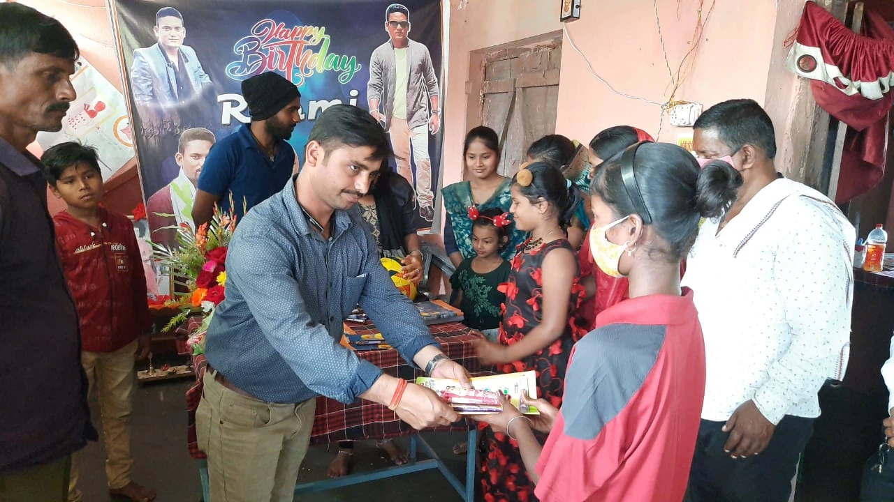
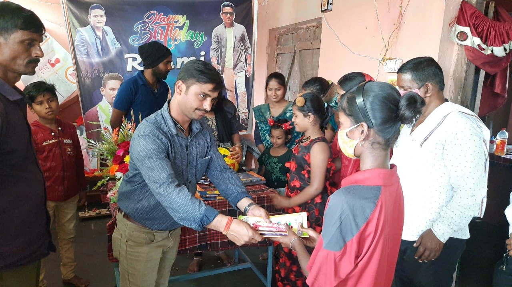

Committed to sustainable development, the Utkal Foundation also plays a crucial role in promoting environmental awareness and conservation. Its large-scale tree plantation campaigns, community clean-up drives, and eco-friendly projects are designed to engage local populations in environmental stewardship and reduce the impact of climate change. Through a combination of grassroots efforts and strategic partnerships, the foundation strives to create lasting change and build stronger, more resilient communities. Guided by values of compassion and empowerment, the Utkal Foundation continues to make a tangible difference in the lives of those it serves, fostering hope and opportunity for a brighter future. Ut enim ad minim veniam, quis nostrud exercitation ullamco laboris nisi ut aliquip ex ea commodo consequat.
Our Contribution
Transforming Lives, Building a Brighter Future
At Utkal Foundation, we are dedicated to uplifting underprivileged communities through various social welfare initiatives. Since our inception in 2012, our mission has been to make a positive and lasting impact in education, healthcare, environmental conservation, and community development.

 

Empowering Communities and Driving Sustainable Change
1. Educational Support
We believe every child deserves a good education. We help by providing educational accessories, and learning opportunities to children who need them most. Our goal is to ensure that every child has the resources and support to learn, grow, and succeed.
2. Healthcare Services
We offer free health checkups and organize eye camps to bring healthcare to those who don’t have easy access to doctors. We also raise awareness about health issues, making sure people know how to stay healthy.
3. Emergency Assistance Program
We provide critical support during emergencies, ensuring the safety and well-being of affected communities through disaster relief, medical aid, and recovery resources.
4. Food Donation Programs
Many people in our community struggle with hunger. Our food donation drives ensure that everyone, especially the most vulnerable, has enough to eat. We work with local partners to distribute food and fight hunger.
5. Conducting the Eye Test Camp
Guide participants through registration, eye tests, and consultations efficiently. Provide vision screenings, counseling, and distribute eyeglasses to those in need.
6. Blood Donation Camp
The Utkal Foundation is organizing a blood donation camp to support healthcare facilities and save lives. Blood donations are essential for treating accident victims, surgery patients, and those battling life-threatening diseases.
7. Clean Water Access
We work tirelessly to provide clean and safe drinking water to underserved communities, addressing a critical need for health and well-being. Through initiatives like water purification systems and well construction, we reduce waterborne diseases and improve quality of life.
8. Anti-Smoking Campaigns
The Utkal Foundation's anti-smoking campaigns raise awareness about tobacco's dangers through workshops and support groups. We provide resources to help individuals quit smoking and reduce its harmful effects. Our goal is to promote healthier lifestyles and improve public health.
9. Women Empowerment
Our initiative supports Self-Help Groups (SHGs) to empower women and marginalized communities through microloans, skill development, and market access. We aim to foster community, encourage entrepreneurship, and promote sustainable livelihoods.
10. Computer Classes for Students
We provide computer classes to equip students with vital digital skills, including basic operations and coding. Our hands-on training enhances academic performance and career opportunities, bridging the digital divide.

11. Child Empowerment
Our Child Empowerment initiative fosters children's potential through education, skill development, and mentorship. We provide access to quality resources and support, helping children thrive and become active contributors to their communities.
12. Tree Plantation Drive
Our Tree Plantation Drive aims to enhance environmental sustainability by increasing green cover in our communities. Through organized planting events, we engage volunteers and educate participants on the importance of trees in combating climate change and improving air quality.
Get Involved
We can’t do this alone. We need your help to continue our work. Whether you want to donate, volunteer, or join one of our programs, there are many ways you can make a difference.
Together, we can create a brighter and healthier future for everyone.